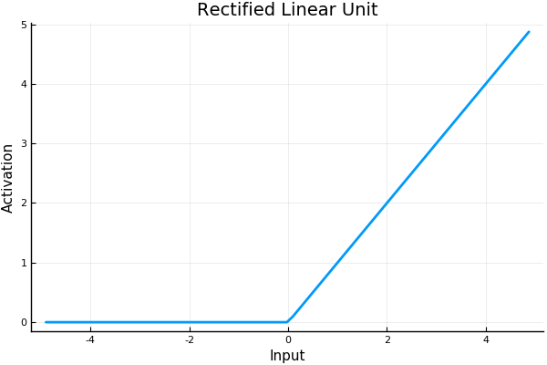
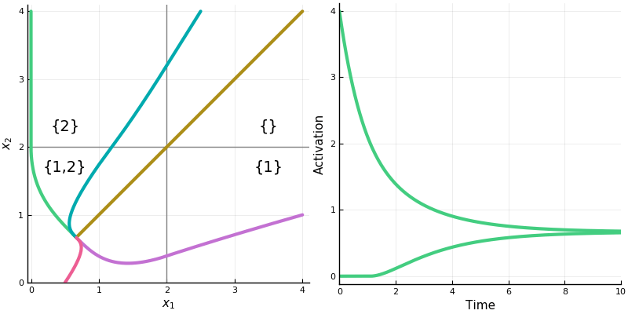
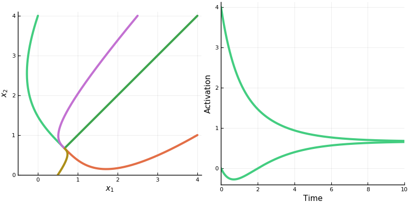
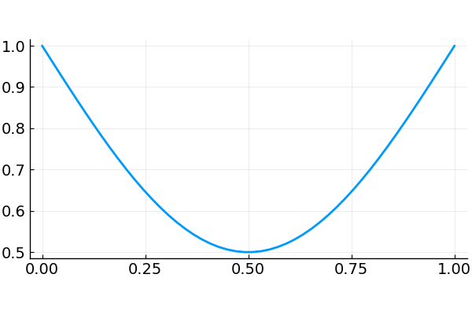
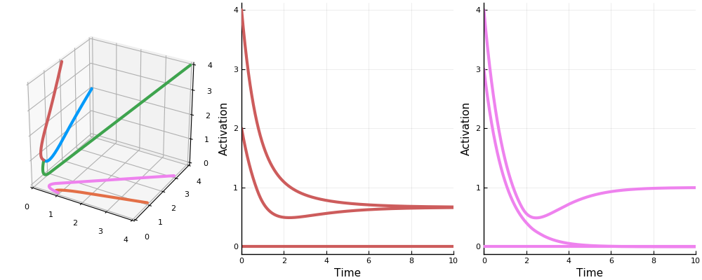
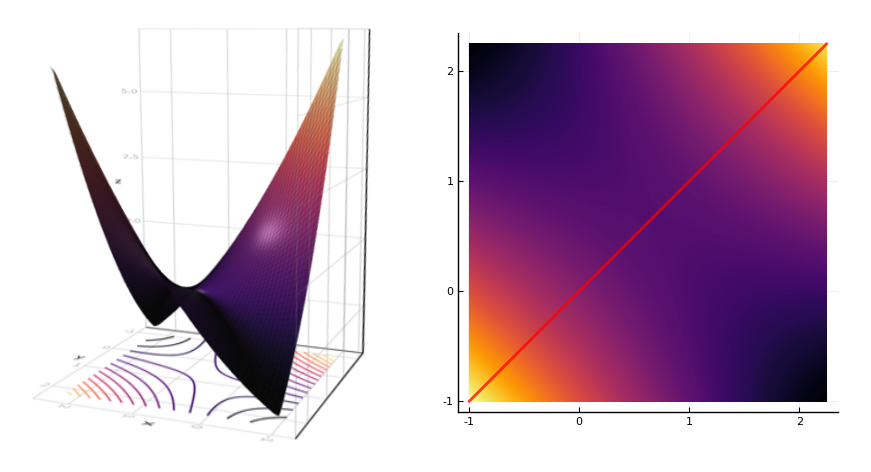
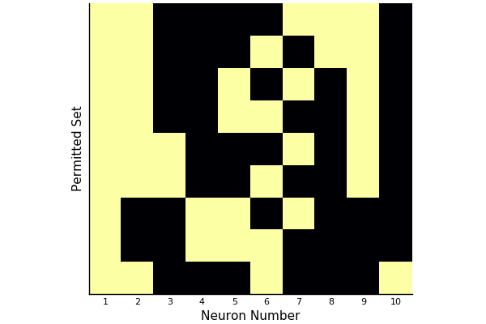
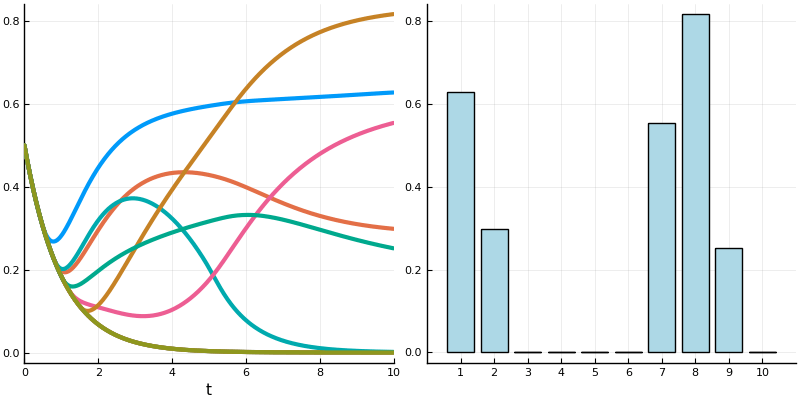

About a month ago, I gave an introductory talk on some applications of category theory. I tried to draw connections between the category of types in Haskell and the use of categories in CQL, a new query language founded on category theory.
Description: Category theory is the language of structure and composition. It is the language of composeable and coherent systems. It has been applied to neural networks and chemical networks, classical mechanics and quantum. It is pervasive in functional programming. If you’ve ever used a functor or a monad or a parametric type, you have used category theory. Recently, it’s been applied to database design as well.
This talk will be an introduction to category theory through Haskell and database programming. We will look at how similarities between the two can be expressed in categories, and how the benefits of safety and abstraction that functional programmers enjoy can be had by database users, too.
This is based off a lesson I put together for a class I teach about general mathematics. I wanted a retirement savings formula that was simple enough for an ordinary person to use on their own, but also flexible enough to account for varied goals or circumstances.
My formula agrees pretty well with what appear to be experts recommend, and it seems to be fairly robust in simulation. This simulation(pdf) based on historical data, says that a plan like this would have succeeded about 97% of the time with typical investments, and even lacking social security(pdf) would have succeeded about 76% of the time. A warning: I however am not a financial expert, so caveat emptor.
The biggest financial problem in anyone’s life is how to provide for oneself in retirement. If you retire in your 60’s, you have a good chance of living for another several decades. Even someone used to living on a modest income of $40,000 a year, could need over half a million dollars saved up to keep from running out of money. “Half a million dollars‽” you cry. “I can barely afford my student loans!” Fortunately, by taking advantage of the most powerful force in the universe it’s easier than you think, especially if you get started early.
The Formula
After thinking about it really hard for a while, you come up with the following goal: “I want to retire at 67 with enough savings to live for 20 years at 80% of my usual income.” What can you do to have a fair chance of meeting this goal? How much you need to save depends most of all on what age you start saving at. Under some reasonable assumptions, the percent \(p\) of your income you would need to save if you started saving at age \(A\) would be: \[\formbox{p = 12\times0.8\left(\frac{0.03}{1.03^N - 1}\right)}\] where \(N=67-A\). If you wanted to type it in to a calculator, the keypresses would likely be something like this:
12 * 0.8 * 0.03 ÷ ( 1.03 ^ N - 1 )
Or you could use the fancy Javascript calculator below.
Example
For instance, say you start saving at 25. Then, assuming no prolonged periods of unemployment, you would be saving for \(N=67-25=42\) years. Plugging this in to the formula, we get
So you would need to put about 12% of your paycheck into some kind of retirement fund in order to meet your goal. If you make $50,000 a year, 12% of your income comes to $6000 a year, or $500 a month. Many employers, however, will offer to match a portion of your contributions. If your employer matches[1] 3%, then you would only need to contribute the other 9%. At $50,000 a year, this is a contribution of $375 a month.
[1]: Unless it is a matter of putting a roof over your head or food on the table, you should always contribute at least up to your employer match. This is an investment with a guaranteed 100% return. You’ll never do better.
The Importance of Starting Early
Consider this table:
Age
% Needed
25
12%
30
15%
35
18%
40
24%
45
31%
50
44%
55
68%
If you put your contributions off until you’re 45, you would have to put back over a third of your income to maintain the lifestyle that you’re used to. Realistically, you’re going to have to make some adjustments. If you wait until you’re 55, things are going to be painful.
Assumptions
Let’s take a look at what assumptions went into our formula and the reasons for them. Feel free to play around with the numbers, but let me try to explain why I think these are good defaults.
We’re assuming that you will retire at age 67, that you will need 12 years of savings in retirement, that you will be living on 80% of your working income, and that while you are working your investments will earn a 3% annual return (adjusted for inflation).
The goal in saving for retirement is to not have to worry about money after you’re not able to earn it any more. The penalty for failing to meet this goal is much greater than the sacrifice needed to achieve it. It is much worse to have $2500 less a month in retirement than it is to have $500 less a month while working. Failure means having to make decisions like whether you’ll pay for your medicine, buy groceries, or keep the lights on once your Social Security check comes in. We want a low chance of failure. These assumptions reflect that goal.
Retire at 67
In the United States, 67 is the age when a person is eligible for full Social Security benefits. These data show that healthy people usually decide to work until 70, when you get enhanced benefits, while unhealthy people retire as soon as they can, at 62, if they can hold out for even that long. Plan for a healthy old age, but consider disability insurance.
12 years of savings
The current life expectancy for someone who makes it to age 67 is about 20 years more. Social Security, in its current state, will pay for about 8 years worth of that,[2] so you, the retiree, will have to come up with the other 12. If you want to plan for a retirement with reduced benefits, or if you are very averse to the risk of living to an advanced age while being very poor, or if you want to retire early, add on a few years. If you plan on dying before you reach 67, congratulations! You’re off the hook.
[2]: I don’t mean to say that Social Security pays out for eight years and then stops. I mean that it will pay for around 8/20 = 40% of your expenses during those 20 years.
80% of working income
The percentage of your income that you will need to maintain your lifestyle in retirement is called your replacement ratio. Generally, it will be less than your working income. Why? Though some costs will have increased (medical, perpetually), typically your financial obligations will be fewer: you don’t have to save money anymore (can’t take it with you), the kids have moved out (let us pray), the mortgage is paid off (at long last)… This study claims your replacement ratio will usually be between 70% to 85%, depending on circumstances. If you plan on being rich and in good health, you may wish to choose the lower number; if you plan on being poor and in bad health, you may wish to choose the higher. In either case, 80% seems a cautious default.
3% annual return
Question: The stock market has historically had about a 7% inflation adjusted return. Even if you put half your money in bonds, you could still get well above 3% annually. So isn’t 3% way too conservative?
Answer: No. Because you, as an individual, don’t get an average return; you get whatever the market gives you. If your retirement years begin with a financial crisis followed by a prolonged recession, it doesn’t matter if the market recovers ten years later, you’ve already spent all your money and you’re not dead yet; as a variation on Keynes: markets can remain depressed longer than you can remain solvent. Assuming a 3% average return will give you a much better chance of avoiding the worst scenarios, and if you start saving early, isn’t much of an additional burden.
(Also, Rite of passage of the engram and Manipulating a cocaine engram, making the practice of neuroscience sometimes sound like a fraternity hazing. Possibly related, while researching this post I learned that a typical experiment will usually involve things like shocking the feet of a fruit fly, sewing shut one eye of a barn owl, and shaving half the whiskers off a mouse.)
A popular theory is that memories are encoded as patterns of synaptic connections. Perception creates neural activity. Neural activity leaves an impression upon the brain as a pattern of modified synaptic connections (perhaps by dendritic spines, which become larger and more numerous to make the connection stronger). A later perception might partly activate this pattern, but this partial activation is often enough to activate the rest of the pattern, too. This is supposed to be a neural model of associative memory. (The tradition is to cite Proust at this point; evidently, a sponge cake was sufficient to activate in him the neural substrate of a 1,267,069 word novel. It’s remarkably illustrative, at least.)
Artificial neural networks are often used to model the networks of the brain. Feedforward networks have typically been used to model the visual system, while recurrent networks have more often been used to model memory. When an input is applied to certain of these recurrent networks, the neural activity will always converge to a stable steady state. This stable pattern of activity is supposed to be a memory, stored within the connections of the network.
Some of the most studied networks are those that are symmetrically connected, like the Hopfield network. A network is symmetrically connected if every neuron is connected with the same weight as whatever is connected to it. A symmetrically connected network with a linearactivation function can, for a given set of connection weights, be activated only to a single stable steady state (whose values depend upon the input to the network). The drawback of these networks then is that the activity at future states will be independent of the activity at past states. Past recall cannot influence future recall.
Hahnloser and Seung present a model of associative memory in symmetrically connected networks using instead a threshold-linear activation function (or rectified linear function).

They show that, due to some nice properties of the rectifier, such networks can in general represent multiple patterns of stable activation even for a single input. What pattern the network will fall into upon new input, depends upon what pattern it was in before. Memories linger.
Their main contribution in this paper is in classifying neurons into what they call “permitted” and “forbidden” sets, which describe what sets of neurons may be activated together in a stable steady-state. They describe a method of determining what patterns of stable activity the network can achieve.
The existence of permitted and forbidden sets suggests a new way of thinking about memory in neural networks. When an input is applied, the network must select a set of active neurons, and this selection is constrained to be one of the permitted sets. Therefore the permitted sets can be regarded as memories stored in the synaptic connections.
A threshold-linear network has the form \[
\dot{x} = -x + \bigg[W x + b \bigg]_+ \tag 1 \label 1
\] where \(x\) is a vector with \(n\) components representing neural activation, \(W\) an \(n \times n\) matrix representing the connection weights between neurons, \(b\) is a vector representing (constant) external input, and \([\cdot]_+ = \operatorname{max}\{0, \cdot\}\), the rectifier function. Hahnloser and Seung assume the weight matrix \(W\) is symmetric (meaning, neurons are connected symmetrically).
For a single neuron we can write \[
\dot{x}_i = -x_i + \bigg[\sum_{j=1}^n w_{ij} x_j + b_i\bigg]_+ \tag 2 \label 2
\] Whenever \(\sum_{j=1}^n w_{ij} x_j + b_i \leq 0\) the input to the neuron is 0. Its dynamics become \(\dot x_i = -x_i\) and its activation will decay exponentially to 0; it is “off”. What this means is that generally only a subset of neurons will be active at any time, and which neurons are active may change as the system evolves.
It helps to think about neurons as being active within “chambers” of the activation space. (These chambers can be found by considering when the expression inside \([\cdot]_+\) is equal to 0.) In each chamber, some of the neurons will be active and some will be inactive. Within each chamber, the network will evolve according to that chamber’s linear equations: \[
\dot{x} = -x + W_\sigma x + b_\sigma \tag 3 \label 3
\] (Here, \(\sigma\) means the set of neurons that are currently active, and \(W_\sigma\) and \(b_\sigma\) have entries set to 0 for those neurons not in \(\sigma\).) Whenever the system enters a new chamber, some neurons will switch on and some will switch off, and a new set of linear equations takes over. Each chamber has a set of eigenvectors given by \(W_\sigma\). These eigenvectors show straight line flows within that chamber.
Let’s take a look at the dynamics of a two neuron system with weight matrix \(\begin{bmatrix}0 & -\frac12 \\
-\frac12 & 0\end{bmatrix}\).
First, the rectified version. The activation space is divided into four chambers; the labels indicate which neurons are active in that chamber. Each curve represents different initialization values for the neurons; the input vector \(b\) is always the same. On the right is a plot for one initialization. In this example, the network always converges to a single steady state, though in other networks there may be more than one.

Notice how the dynamics change when the system enters in innermost chamber \(\{1,2\}\). Compare this to the same system lacking the rectifier \([\cdot]_+\); it is a linear system.

Three Theorems
The authors prove three theorems. The first gives the conditions under which a network will have a set of global, stable steady states (aka. globally asypmtotic fixed points, equilibrium points), depending on connection weights and input. These steady states, when they exist, are fixed points of activation to which the network will always converge.
Assuming these conditions, in the second and third theorems the authors give two possibilities for this set of steady states. The first possibility is that the network contains forbidden sets of neurons, neurons that may not be activated together at a steady state; in this case the network will be multistable: for a given input, it may converge to one of several steady states depending on initial activations. The second possibility is that there are no forbidden sets; in this case, for a given input, the network will always converge to the same steady state; as far as stable points go, it is just like a linear system, without the rectifier.
Theorem 1 - Steady States
Again, this theorem gives the conditions under which a network may have a set of stable steady states.
The authors present their results in terms of the matrix \(I-W\). We can rewrite the linear system \(\ref 3\) as \[ \dot x = (-I + W)x + b \tag 4 \] The stability of the system can be determined from the eigenvalues of the matrix \(-I + W\); specifically, the system is globally asymptotically stable if the real parts of the matrix are all negative. Since \(-I + W\) is symmetric and real, its eigenvalues will all be real; so, we are looking for negative eigenvalues. It is, however, usually more convenient to work with positive numbers, so instead we can look for positive eigenvalues of \(I - W\) (or even eigenvalues of \(W\) that are less than 1).
Theorem 1
If W is symmetric, then the following conditions are equivalent:
All nonnegative eigenvectors of all principal submatrices of \(I - W\) have positive eigenvalues.
The matrix \(I - W\) is copositive. That is, \(x^\top (I - W)x \gt 0\) for all nonnegative \(x\), except \(x = 0\).
For all \(b\), the network has a nonempty set of steady states that are globally asymptotically stable.
\(R(v)\) for \(\left\lVert v \right\rVert = 1\)
One of the things I liked about this paper was that they proved their results using methods from both Lyanpunov functions and quadratic programming. They prove that \((1)\) implies \((2)\), for instance, by minimizing \(v^\top (I - W) v\) (a quadratic function) for nonnegative vectors \(v\) on the unit sphere (that is, \(\left\lVert v \right\rVert = 1\)). The quantity \(R(v) = v^\top (I - W) v\) is equivalent to the Rayleigh quotient. Optimizing \(R\) will find the eigenvectors of the matrix \(I - W\). Because of the rectifier, neural activations (provided they start above 0) can never fall below 0. Any steady state therefore will occur along a non-negative eigenvector. This, I think, is one of the most important insights about the effect of the rectification.
Here are the authors again:
The meaning of these stability conditions is best appreciated by comparing with the analogous conditions for the purely linear network obtained by dropping the rectification from (1). In a linear network, all eigenvalues of W would have to be smaller than unity to ensure asymptotic stability. Here only nonnegative eigenvectors are able to grow without bound, due to the rectification, so that only their eigenvalues must be less than unity. All principal submatrices of W must be considered because different sets of feedback connections are active, depending on the set of neurons that are above threshold. In a linear network, \(I - W\) would have to be positive definite to ensure asymptotic stability, but because of the rectification, here this condition is replaced by the weaker condition of copositivity.
So, the tradeoff for the rectification is that we get stability for more general sets of weight matricies, but we have to analyze all \(2^n\)principal submatrices to find out if we get it.
Theorems 2 and 3 - Permitted and Forbidden Sets
These two theorems classify the permitted and forbidden sets of a network.
The first theorem tells us that if a network has a set of global, stable steady states, then all of the nonnegative eigenvectors of all principal submatrices of \(I-W\) will have positive eigenvalues. When the system begins with positive activations, the activation will flow along time-varying superpositions of the (nonnegative) eigenvectors toward some fixed point. We might think that every subsystem has to have a fixed point, then. But this is not so. It could turn out that what would be the fixed point for the subsystem lies outside of its chamber, and then the dynamics will have changed before the system ever reaches it. In this case the system has a forbidden set, because the neurons in that subsystem cannot be coactivated together at a stable steady state.
Theorem 2
If the matrix \(I - W\) is copositive, then the following statements are equivalent:
The matrix \(I - W\) is not positive definite.
There exists a forbidden set.
The network is conditionally multistable. That is, there exists an input \(b\) such that there is more than one stable steady state.
A three neuron system with two steady states.
They prove that (2) implies (3) by examining a Lyapunov function \(V(x) = \frac12 x^\top (I - W) x - b^\top x\). They argue as follows: a forbidden set implies the existence of a negative eigenvalue of \(I - W\) in the corresponding active submatrix. The function \(V\) therefore forms a saddle. The system can be initially activated on either side of the saddle, and will descend to a different minimum on each side. These are two different stable steady states.
The Lyapunov function for a two neuron system with connection weights equal to 2. On the right, a line in the direction of an eigenvector with positive eigenvalue is in red.
Theorem 3 If \(W\) is symmetric, then the following conditions are equivalent:
The matrix \(I - W\) is positive definite.
All sets are permitted.
For all \(b\) there is a unique steady state, and it is stable.
A linear system, like \(\ref 3\), will have a global steady state if \(I-W\) is positive definite (all eigenvalues are positive). So, in a rectified system if all the neurons may be activated together at a stable steady state, the system behaves much like a linear system in regard to its steady states. Rectified systems are more interesting when they have some forbidden sets.
If I am understanding the paper correctly, we could characterize permitted and forbidden sets like this:
permitted set
forbidden set
principal submatrix with only positive eigenvalues
principal submatrix with a negative eigenvalue
neurons that can be coactivated at a stable steady state
neurons that cannot be coactivated at a stable steady state
positive eigenvectors and positive eigenvalues
eigenvectors with negative components that give negative eigenvalues
Finally, they show with the interlacing theorem that the sets of neurons that may be coactivated together at stable states are constant in some sense throughout the system, for the reason that eigenvalues of a submatrix have to be contained in the radius of eigenvalues of the parent matrix.
Theorem 4
Any subset of a permitted set is permitted. Any superset of a forbidden set is forbidden.
Here for instance are the permitted sets for a network of ten neurons with randomly generated weights.
Permitted sets for a ten neuron network.
(This only shows “maximal” permitted sets; that is, those permitted sets not contained in any other permitted set.)
And this shows the steady state of the topmost permitted set with each neuron receiving an input of 1.
Left: Neural activations. Right: Steady states.
And here is a (different) network transitioning through stable states as inputs and activations vary.
Conclusion
If a connection pattern in a network is a memory, then multistability allows the brain to store memories much more efficiently. Patterns of activation can overlap within a network. One neuron can partake of several memories, much like a single gene can be implicated in the expression of a multitude of traits or behaviors. I imagine that whatever process the brain uses for memory storage, it must make a tradeoff between robustness and efficiency. It wants to minimize the cost of storing memories and so should use as few neurons as possible to do so, yet the death of a single neuron shouldn’t disrupt the system as a whole. The model of overlapping patterns seems to me like a plausible solution.
(I decided to read this paper after becoming interested in CarinaCurto’s work on combinatorial threshold networks. She and her collaborators have extended the ideas presented here to more general threshold networks that can display various kind of dynamic behavior. I hope I can review some of her work in the future.)
Appendix - Computing Permitted Sets in Julia
using Combinatorics
using LinearAlgebra
"""Determine whether the list `l1` is a numerical translation of the
list `l2`. The function will return `true` when `l1 == k+.l2` for some `k`
modulo `n+1`."""
function istranslation(l1, l2, n::Int)
any([l1 == map(x -> mod(x+i, n+1), l2) for i in 1:n])
end
"""Returns a maximal set of lists from `lists` that are unique up to translation."""
function removetranslations(lists, n::Int)
ls = []
for l in lists
if !any(map(x->istranslation(l, x, n), ls))
push!(ls, l)
end
end
return ls
end
"""Returns a set of lists from `lists` that are not properly contained in
any other list."""
function removesubsets(lists)
isproper(a, b) = issubset(a, b) && a != b
ls = []
for a in lists
if !any(map(b -> isproper(a, b), lists))
push!(ls, a)
end
end
return ls
end
"""Determines whether a matrix `A` represents a permitted set of neurons. `A`
should be of the form `I-W`, where `W` is the weight matrix."""
function ispermitted(A)
all(map(x -> x>0, eigvals(A)))
end
"""Returns a matrix `P` of all permitted sets represented by a matrix
`A` of the form `I-W`. If neuron `j` is contained in permitted set
`i`, then `P[i,j] == 1`; otherwise, `P[i,j] == 0`. Each permitted set
is unique up to translation, and is not contained in any other
permitted set in `P`."""
function permittedparents(A)
ps = []
n = length(A[:,1])
idxs = removetranslations(powerset(1:n), n)
filter!(!isempty, idxs)
for idx in idxs
submatrix = A[idx, idx]
if ispermitted(submatrix)
push!(ps, idx)
end
end
ps = removesubsets(ps)
P = zeros(length(ps), n)
for (i, pp) in enumerate(ps)
for j in pp
P[i, j] = 1
end
end
return P
end